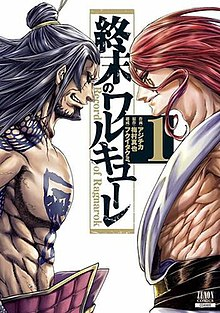

Record of Ragnarok (Japanese: 終末のワルキューレ, Hepburn: Shūmatsu no Warukyūre, lit. "Doomsday Valkyrie") is a Japanese manga series written by Shinya Umemura and Takumi Fukui and illustrated by Ajichika about a fighting tournament featuring prominent historical figures against gods from various mythologies, with the fate of mankind in the balance. It began in Coamix's (formerly also published by Tokuma Shoten) seinen manga magazine Monthly Comic Zenon in November 2017. It was licensed in North America by Viz Media in June 2021. The manga was adapted as an original net animation (ONA) by Graphinica and premiered on Netflix in June 2021. A second season by Graphinica and Yumeta Company premiered in January 2023.
The Gods' Council assembles once every millennium to decide the fate of humanity, deciding that mankind's 7 million years of irredeemable history gives justification for their extinction. But the valkyrie Brunhilde proposes giving humanity one last chance to prove their worth and the gods agree to hold the tournament of Ragnarök, where humanity will be spared if they can best the gods in seven out of thirteen matches. Humanity's representatives are the Einherjar, notable humans across history who are each granted a valkyrie who becomes a powerful weapon tailored for their user's combat style called "Volund", at the risk of losing her life if the user is killed.
Every 1000 years, gods of every pantheon convene and hold a conference to decide the fate of humanity by calling a vote to determine whether or not the human race should continue living or go extinct. With the most recent of these conferences having concluded, the gods unanimously decided to put humanity to an end. However, at the very last second, the eldest of the Valkyries, accompanied by the youngest, intervened and made the bold proposition to let humanity have a say in their fate by letting them go against the gods in a series of one-on-one fights to see if they are worthy of continuing to exist. Afraid to let go of their pride, the gods accept this proposal. Thirteen gods will fight against thirteen human champions. The first side to reach seven victories will decide humanity's fate.
The progenitor of all humanity who fights and loses against Zeus in the second match. Designed in the image of a god, Adam can perfectly replicate any move and technique he lays his eyes upon. His weapon is a knuckleduster, granted by the valkyrie Reginleif. More Info...
The supreme Greek god and chairman of the Gods' Council who fights and wins the second match, fighting barehanded. More Info...